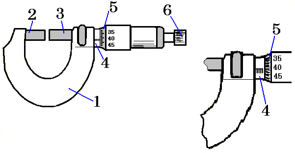

2.1 Statistics and measuring
1 Measurement errors
The goal of any study is to establish connections between various phenomena and parameters. The quantitative relationship between the studied quantities is obtained as a result of measurement.
Obviously, no measurement can be made absolutely accurately. Due to various reasons, errors inevitably occur during measurements. They lead to the fact that as a result of measurements, they obtain not the true value of the measured quantity, but values that differ to one degree or another from it. The measurement task includes not only determining the value of the quantity itself, but also assessing the errors allowed.
The value of a physical quantity obtained during measurement differs from the true one. The accuracy of measurements is characterized by error - the deviation of the measurement result from the true value of the desired value.
There are four types of measurement errors:
- rude (misses)
- systematic
- instrumental
- random
Gross errors arise as a result of inattention or fatigue of the experimenter, as well as under poor observation conditions. They lead to values of the measured quantity that differ sharply from the rest.
To eliminate mistakes, you should be careful and thorough when taking measurements. In any case, gross errors must be excluded. Sometimes this can be done by repeating the measurement under slightly different conditions or by a different observer. However, this does not always allow us to exclude a mistake.
Systematic errors are characterized by the fact that they remain unchanged in all measurements carried out by the same method using the same measuring instruments.
They can arise, in particular, due to the fact that the influence of certain factors is not taken into account in the measurements. Such errors can be eliminated by introducing various kinds of amendments to the calculation formulas. Systematic errors can also be caused by faulty measuring instruments, for example, a shift in the scale zero. In order to eliminate systematic errors as much as possible, the measurement method should be carefully analyzed.
Random errors are a consequence of factors whose influence cannot be taken into account. There are many such factors, and their role in each measurement is not the same. These errors differ from each other in individual measurements, and these differences have a random magnitude unknown to us.
The rules for determining random errors are considered in the theory of errors, based on mathematical statistics and probability theory, which makes it possible to calculate the most probable value of the measured value from measurement data and estimate the measurement error.
Knowing the distribution law of the random error, one can make a probabilistic assessment of the measurement error. Let us carry out this assessment for the normal distribution of measurement errors.
Let n measurements of some quantity x be determined resulting in a series of values of this quantity:
\overline{x} = \frac{x_1+...+x_n}{n}
where x_1, ... ,x_n are individual measurement values. The most probable value is the arithmetic mean of this value.
The magnitudes |\overline{x} - x_1| = |\Delta x_1|,…, |\overline{x} - x_n| = |\Delta x_n| are called the absolute errors of an individual measurement. The arithmetic mean value of absolute measurement errors is:
\overline{|\Delta x|} = \frac{|\Delta x_1|+...+|\Delta x_n|}{n}
The quality of measurement results is characterized by the ratio of the average absolute error to the arithmetic value of the measured value. This ratio is called relative error D:
D = \frac{\overline{|\Delta x|}}{\overline x}
We write the final result in the form:
x_{\text{source}} = \overline{x} \pm \overline{|\Delta x|}
2 Calipers
A caliper is a metal ruler 4, divided into centimeters and millimeters and having a leg 1 at one end. A second leg 2, equipped with a vernier 3, can move along the ruler, allowing you to count tenths of a millimeter.
When the legs are pushed together all the way, the zero of the vernier coincides with the zero of the ruler. To determine the size of the body, spread the legs of the caliper, place the body between them and move the movable leg until it comes into close contact with the body.
The number of whole divisions is counted against the vernier zero on the main scale, and tenths of a millimeter are read on the vernier scale against the division that coincides with any division on the main scale. The upper legs are used to measure internal dimensions, for example, a tube. # Micrometer
The micrometer consists of a bracket 1, in the couplings of which there is a stop 2 on the left and a micrometer screw 3 with a rod 6 on the right. The screw passes inside the fixed tube and is attached to the movable tube 5, the left cut of which represents a drum scale with 50 divisions.
Rotating tube 5 by one division leads to a displacement of the screw and rod by 0.01 mm. A full revolution corresponds to a displacement of 0.5 mm, which is read on a scale on a stationary tube.
To ensure a constant clamping force on the body being measured and to avoid its deformation, a ratchet 6 is used.

3 Exercise
We are going to make everybody in the class take measurements about the same thing:
- A time interval determined by the teacher
- The length of an object
- The weight of another object
Using these measurements, we are going to write the data, and then determine the experimental averages, variations and the relative error of the “class” instrument of measurement.